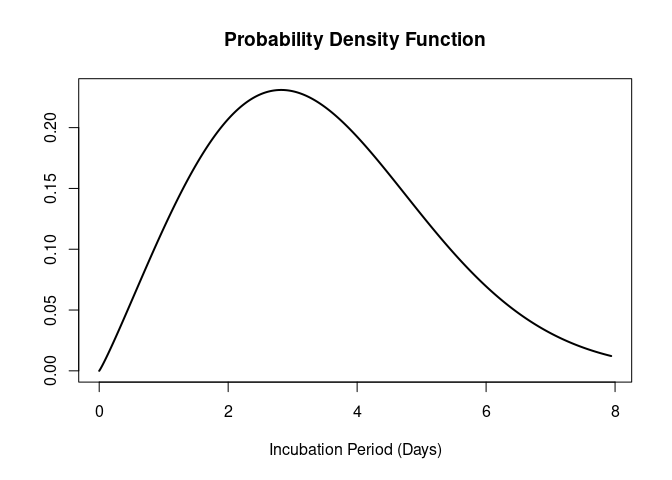

epiparameter is an R package that contains a library of epidemiological parameters for infectious diseases as well as classes and helper functions to work with the data. It also includes functions to extract and convert parameters from reported summary statistics.
epiparameter is developed at the Centre for the Mathematical Modelling of Infectious Diseases at the London School of Hygiene and Tropical Medicine as part of Epiverse-TRACE.
Installation
The package can be installed from CRAN using
install.packages("epiparameter")The development version of epiparameter can be installed from GitHub using the pak package:
# check whether {pak} is installed
if(!require("pak")) install.packages("pak")
pak::pak("epiverse-trace/epiparameter")Alternatively, install pre-compiled binaries from the Epiverse TRACE R-universe
install.packages("epiparameter", repos = c("https://epiverse-trace.r-universe.dev", "https://cloud.r-project.org"))Quick start
To load the library of epidemiological parameters into R:
epiparameters <- epiparameter_db()
#> Returning 125 results that match the criteria (100 are parameterised).
#> Use subset to filter by entry variables or single_epiparameter to return a single entry.
#> To retrieve the citation for each use the 'get_citation' function
epiparameters
#> # List of 125 <epiparameter> objects
#> Number of diseases: 23
#> ❯ Adenovirus ❯ Chikungunya ❯ COVID-19 ❯ Dengue ❯ Ebola Virus Disease ❯ Hantavirus Pulmonary Syndrome ❯ Human Coronavirus ❯ Influenza ❯ Japanese Encephalitis ❯ Marburg Virus Disease ❯ Measles ❯ MERS ❯ Mpox ❯ Parainfluenza ❯ Pneumonic Plague ❯ Rhinovirus ❯ Rift Valley Fever ❯ RSV ❯ SARS ❯ Smallpox ❯ West Nile Fever ❯ Yellow Fever ❯ Zika Virus Disease
#> Number of epi parameters: 13
#> ❯ case fatality risk ❯ generation time ❯ hospitalisation to death ❯ hospitalisation to discharge ❯ incubation period ❯ notification to death ❯ notification to discharge ❯ offspring distribution ❯ onset to death ❯ onset to discharge ❯ onset to hospitalisation ❯ onset to ventilation ❯ serial interval
#> [[1]]
#> Disease: Adenovirus
#> Pathogen: Adenovirus
#> Epi Parameter: incubation period
#> Study: Lessler J, Reich N, Brookmeyer R, Perl T, Nelson K, Cummings D (2009).
#> "Incubation periods of acute respiratory viral infections: a systematic
#> review." _The Lancet Infectious Diseases_.
#> doi:10.1016/S1473-3099(09)70069-6
#> <https://doi.org/10.1016/S1473-3099%2809%2970069-6>.
#> Distribution: lnorm (days)
#> Parameters:
#> meanlog: 1.723
#> sdlog: 0.231
#>
#> [[2]]
#> Disease: Human Coronavirus
#> Pathogen: Human_Cov
#> Epi Parameter: incubation period
#> Study: Lessler J, Reich N, Brookmeyer R, Perl T, Nelson K, Cummings D (2009).
#> "Incubation periods of acute respiratory viral infections: a systematic
#> review." _The Lancet Infectious Diseases_.
#> doi:10.1016/S1473-3099(09)70069-7
#> <https://doi.org/10.1016/S1473-3099%2809%2970069-7>.
#> Distribution: lnorm (days)
#> Parameters:
#> meanlog: 1.163
#> sdlog: 0.140
#>
#> [[3]]
#> Disease: SARS
#> Pathogen: SARS-Cov-1
#> Epi Parameter: incubation period
#> Study: Lessler J, Reich N, Brookmeyer R, Perl T, Nelson K, Cummings D (2009).
#> "Incubation periods of acute respiratory viral infections: a systematic
#> review." _The Lancet Infectious Diseases_.
#> doi:10.1016/S1473-3099(09)70069-8
#> <https://doi.org/10.1016/S1473-3099%2809%2970069-8>.
#> Distribution: lnorm (days)
#> Parameters:
#> meanlog: 1.386
#> sdlog: 0.593
#>
#> # ℹ 122 more elements
#> # ℹ Use `print(n = ...)` to see more elements.
#> # ℹ Use `parameter_tbl()` to see a summary table of the parameters.
#> # ℹ Explore database online at: https://epiverse-trace.github.io/epiparameter/articles/database.htmlThis results in a list of database entries. Each entry of the library is an <epiparameter> object.
Alternatively, the library of epiparameters can be viewed as a vignette locally (vignette("database", package = "epiparameter")) or on the {epiparameter} website.
The results can be filtered by disease and epidemiological distribution. Here we set single_epiparameter = TRUE as we only want a single database entry returned, and by default (single_epiparameter = FALSE) it will return all database entries that match the disease (disease) and epidemiological parameter (epi_name).
influenza_incubation <- epiparameter_db(
disease = "influenza",
epi_name = "incubation period",
single_epiparameter = TRUE
)
#> Using Virlogeux V, Li M, Tsang T, Feng L, Fang V, Jiang H, Wu P, Zheng J, Lau
#> E, Cao Y, Qin Y, Liao Q, Yu H, Cowling B (2015). "Estimating the
#> Distribution of the Incubation Periods of Human Avian Influenza A(H7N9)
#> Virus Infections." _American Journal of Epidemiology_.
#> doi:10.1093/aje/kwv115 <https://doi.org/10.1093/aje/kwv115>..
#> To retrieve the citation use the 'get_citation' function
influenza_incubation
#> Disease: Influenza
#> Pathogen: Influenza-A-H7N9
#> Epi Parameter: incubation period
#> Study: Virlogeux V, Li M, Tsang T, Feng L, Fang V, Jiang H, Wu P, Zheng J, Lau
#> E, Cao Y, Qin Y, Liao Q, Yu H, Cowling B (2015). "Estimating the
#> Distribution of the Incubation Periods of Human Avian Influenza A(H7N9)
#> Virus Infections." _American Journal of Epidemiology_.
#> doi:10.1093/aje/kwv115 <https://doi.org/10.1093/aje/kwv115>.
#> Distribution: weibull (days)
#> Parameters:
#> shape: 2.101
#> scale: 3.839To quickly view the list of epidemiological distributions returned by epiparameter_db() in a table, the parameter_tbl() gives a summary of the data, and offers the ability to subset you data by disease, pathogen and epidemiological parameter (epi_name).
parameter_tbl(epiparameters)
#> # Parameter table:
#> # A data frame: 125 × 7
#> disease pathogen epi_name prob_distribution author year sample_size
#> <chr> <chr> <chr> <chr> <chr> <dbl> <dbl>
#> 1 Adenovirus Adenovi… incubat… lnorm Lessl… 2009 14
#> 2 Human Coronavir… Human_C… incubat… lnorm Lessl… 2009 13
#> 3 SARS SARS-Co… incubat… lnorm Lessl… 2009 157
#> 4 Influenza Influen… incubat… lnorm Lessl… 2009 151
#> 5 Influenza Influen… incubat… lnorm Lessl… 2009 90
#> 6 Influenza Influen… incubat… lnorm Lessl… 2009 78
#> 7 Measles Measles… incubat… lnorm Lessl… 2009 55
#> 8 Parainfluenza Parainf… incubat… lnorm Lessl… 2009 11
#> 9 RSV RSV incubat… lnorm Lessl… 2009 24
#> 10 Rhinovirus Rhinovi… incubat… lnorm Lessl… 2009 28
#> # ℹ 115 more rows
parameter_tbl(
epiparameters,
epi_name = "onset to hospitalisation"
)
#> # Parameter table:
#> # A data frame: 5 × 7
#> disease pathogen epi_name prob_distribution author year sample_size
#> <chr> <chr> <chr> <chr> <chr> <dbl> <dbl>
#> 1 MERS MERS-Cov onset to hospi… <NA> Assir… 2013 23
#> 2 COVID-19 SARS-CoV-2 onset to hospi… gamma Linto… 2020 155
#> 3 COVID-19 SARS-CoV-2 onset to hospi… gamma Linto… 2020 34
#> 4 COVID-19 SARS-CoV-2 onset to hospi… lnorm Linto… 2020 155
#> 5 COVID-19 SARS-CoV-2 onset to hospi… lnorm Linto… 2020 34The <epiparameter> object can be plotted.
plot(influenza_incubation)
The CDF can also be plotted by setting cumulative = TRUE.
plot(influenza_incubation, cumulative = TRUE)
Parameter conversion and extraction
The parameters of a distribution can be converted to and from mean and standard deviation. In epiparameter we implement this for a variety of distributions:
- gamma
- lognormal
- Weibull
- negative binomial
- geometric
The parameters of a probability distribution can also be extracted from other summary statistics, for example, percentiles of the distribution, or the median and range of the data. This can be done for:
- gamma
- lognormal
- Weibull
- normal
Contributing to library of epidemiological parameters
The library of epidemiological parameters that can be loaded by epiparameter using the epiparameter_db() function is stored in the {epiparameterDB} R package. If you would like to contribute to the library of epiparameters you can either:
Add data to a public google sheet. This spreadsheet contains two example entries as a guide to what fields are accepted. We are monitoring this sheet for new entries that will subsequently be included in the package.
Add to the JSON file holding the database directly via a Pull Request. See the contributing guide for instructions.
You can find a description of the epidemiological parameter data structure and contents in the data dictionary. This documents the valid format and data types to ensure consistency and accuracy. All entries in the parameter library are automatically validated against the data dictionary using an GitHub action workflow.
Help
To report a bug please open an issue
Contribute
Contributions to epiparameter are welcomed. package contributing guide.
Code of Conduct
Please note that the epiparameter project is released with a Contributor Code of Conduct. By contributing to this project, you agree to abide by its terms.
Citing this package
citation("epiparameter")
#> To cite package 'epiparameter' in publications use:
#>
#> Lambert J, Kucharski A, Tamayo C (2025). _epiparameter: Classes and
#> Helper Functions for Working with Epidemiological Parameters_.
#> doi:10.5281/zenodo.11110881
#> <https://doi.org/10.5281/zenodo.11110881>,
#> <https://epiverse-trace.github.io/epiparameter/>.
#>
#> A BibTeX entry for LaTeX users is
#>
#> @Manual{,
#> title = {epiparameter: Classes and Helper Functions for Working with Epidemiological Parameters},
#> author = {Joshua W. Lambert and Adam Kucharski and Carmen Tamayo},
#> year = {2025},
#> doi = {10.5281/zenodo.11110881},
#> url = {https://epiverse-trace.github.io/epiparameter/},
#> }